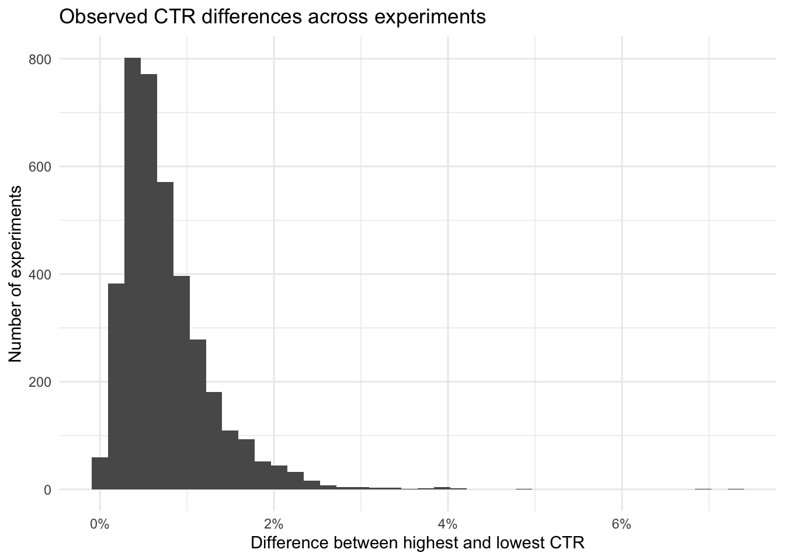

Upworthy was a digital media publisher (from January 2013 to April 2015) that routinely used randomized experiments to test different ways of presenting its articles.
For each experiment, users visiting the Upworthy website were randomly assigned to see one of several packages, where each package consisted of a headline and image combination. Upworthy recorded the number of users who were shown each package (impressions) and the number who selected it (clicks).
The primary outcome is the click-through rate (CTR):
Unlike the other two applications that observed single experiment, this dataset contains thousands of separate experiments, and individual experiments may contain more than two treatment variants.
Research question:
How much do alternative headline and image packages affect click-through rates across Upworthy’s randomized experiments?
2. Identify the treatment and control groups
We begin by loading the Upworthy archive and inspecting its structure. Each row represents one experimental package, or experimental arm, within an experiment.
The variables of interest are:
clickability_test_id: identifies the experiment. Packages with the same ID belong to the same randomized experiment.
impressions: number of times the package was shown.
clicks: number of clicks received.
headline: headline included in the package.
eyecatcher_id: identifier for the image included in the package.
created_at: time the package was created.
winner: indicates whether the package was ultimately selected by Upworthy.
Unlike a simple two-arm A/B test, many Upworthy experiments contain more than two packages. Therefore, there is not always a single treatment effect of the form (p_B-p_A).
For experiment (j), suppose there are (k) packages with click probabilities
\[p_{j1}, p_{j2}, \ldots, p_{jk}.\]
The main statistical question is whether the click-through rates differ between any of the packages within the same experiment.
As a descriptive measure of the size of the differences within an experiment, we can also calculate the CTR range:
\[\min(\widehat p_{j1},\ldots,\widehat p_{jk}).\] This describes the observed spread in CTR within an experiment. It should not be interpreted as a single treatment effect because the best and worst packages are selected after observing the data.
4. Explore and check the experimental data
Before testing differences in CTR, we first check that the experimental data are valid.
The dataset contains one row for each experimental package. Packages belonging to the same clickability_test_id were part of the same experiment.
Remove experiments from the period with known randomization concerns
A later review of the Upworthy archive identified possible randomization problems for experiments conducted between June 25, 2013 and January 10, 2014.
The version of the dataset used here was released before the corresponding problem indicator was added. Therefore, for causal analyses, we exclude experiments conducted during this period.
Min. 1st Qu. Median Mean 3rd Qu. Max.
86 11680 15206 16790 20128 76900
5. Estimate and test the treatment effect
Because most experiments contain more than two packages and there is no universal control group, there is not one treatment-control difference to estimate for every experiment.
Instead, for each experiment we ask whether the underlying click-through rates are equal across all packages.
For an experiment with (k) packages, the null hypothesis is: \[H_0: p_1 = p_2 = \cdots = p_k \\
H_A:
\text{at least one }p_j\text{ differs}.\] For two packages, this reduces to the usual two-sample proportion test.
For more than two packages, prop.test() performs an overall test of equality of proportions.
Warning: There were 18 warnings in `summarise()`.
The first warning was:
ℹ In argument: `p_value = if (...) NULL`.
ℹ In group 1802: `clickability_test_id = "53f74ea515ec7de635000001"`.
Caused by warning in `prop.test()`:
! Chi-squared approximation may be incorrect
ℹ Run `dplyr::last_dplyr_warnings()` to see the 17 remaining warnings.
5.2 Account for multiple testing
We are testing thousands of separate experiments. If every experiment were tested at the 0.05 level, some experiments would appear statistically significant simply by chance.
We therefore adjust the p-values using the Bonferroni procedure, which controls the probability of making at least one false positive across all hypothesis tests:
The unadjusted p-value evaluates each experiment separately.
The Bonferroni-adjusted p-value accounts for the fact that we are examining many experiments and controls the family-wise error rate, or the probability of making at least one false positive across the full set of hypothesis tests.
For the experiments retained in this analysis, some show evidence that click-through rates differ among the packages being tested.
The unadjusted analysis identifies experiments with (p<0.05), but this does not account for the thousands of hypothesis tests being conducted.
After applying the Bonferroni correction, experiments with an adjusted p-value below 0.05 provide stronger evidence that at least one package has a different underlying click-through rate. Because Bonferroni controls the family-wise error rate, it is a conservative adjustment and may identify fewer significant experiments than less stringent procedures.
Importantly, a significant overall test tells us that not all package CTRs are equal. It does not by itself tell us which specific packages differ.
We can visualize the distribution of the observed CTR differences:
ggplot(experiment_results,aes(x = ctr_range)) +geom_histogram(bins =40) +scale_x_continuous(labels = scales::percent) +labs(title ="Observed CTR differences across experiments",x ="Difference between highest and lowest CTR",y ="Number of experiments") +theme_minimal()

The Upworthy archive therefore demonstrates that alternative headline and image packages can produce meaningful differences in user clicking behavior, but those differences vary considerably from experiment to experiment.
7. Make a practical recommendation
There is no single headline or image treatment that can be recommended across all Upworthy experiments because every experiment tested different packages.
Instead, the results support the use of randomized experimentation to compare alternative content packages before choosing which version to deploy.
A practical decision process would be:
Randomly assign users to the competing packages.
Compare their click-through rates.
Quantify the uncertainty in those differences.
Account for multiple comparisons when several packages are tested.
Consider whether the observed improvement is large enough to be practically meaningful.
Select a package only when the statistical and practical evidence supports doing so.
The main takeaway is that the package with the highest observed CTR should not automatically be considered the best package. Sampling variability can produce apparent winners, particularly when many variants are tested.
Randomized testing provides a more reliable basis for deciding which headline and image package should be used.